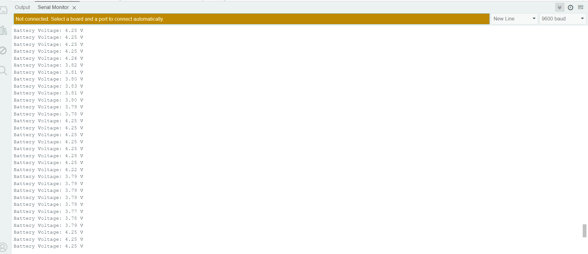
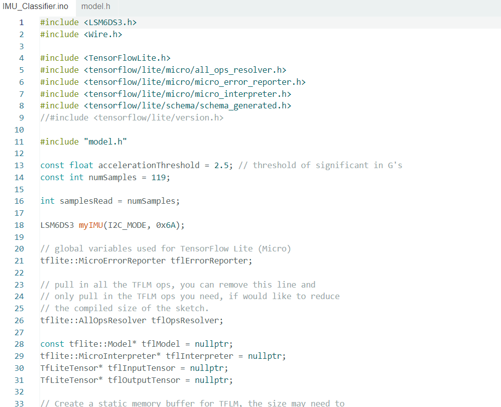

This website documents my project progress.
WEEK 1
LAB 1
So first I assembled the components as shown in the image below

Now I Installed the Arduino IDE and selected the board and port according to the tutorial
Now I have taken a Blink example as shown in the image below

I have done Blink example with the green light and I attached the video below
WEEK 2
LAB 2
Installed and added the ZIP file of the Seed Arduino LSM6DS3 into the Arduino IDE
The below image is the output of HIGH LEVEL EXAMPLE where it tells about the Readings of the Accelerometer, Gyroscope, and Thermometer
The below image is the output of PDM Serial Plotter
The below image is the input and output of the OLED Display where it shows the Class Code and the Name of the Student
The below image is the output of MicroSD card DATA LOGGER which it shows the readings of 3 sensors and I attached a text file of it
The below image is the output of REAL TIME CLOCK where it shows the time, date and Year
The video below is about the Buzzer code which it sings Happy Birthday
The below images show Bluetooth Low Energy where the LED can turn on by giving values in the APP
WEEK 3
LAB 3
1. The below image shows the CODE of Voltage Divider And Battery Monitoring

This is the setup Kit for the Voltage Divider And Battery Monitoring where I have considered R1= 2880 ohm(combination of 2200 and 680) and R2=10000 ohm

The below image shows the OUTPUT of Voltage Divider And Battery Monitoring
2. SYSTEM INTEGRATION
Below file is about the Data Logging Management
The below images are about the Bluetooth control Functionality and OLED display operation


The below video is the demonstration of all procedures
WEEK 4
LAB 4
The below image is about the code which is useful to get the gesture data like punch and flex

The below are punch.csv and flex.csv files
The below images are done in Google Collab after training the data that we are given as punch and flex
The below images are the graphs of the flex and punch data


The below image is the Training and Validation Loss

The below image is the IMU classifier code image and file and the OUTPUT
Flow Chart of ACTIVITY TRACKER

WEEK 5
LAB 5
The below File is the Schematic File
The below File is the PCB File
The below Screenshot is the DRC CHECK and I got 0 errors

The below Screenshot is the 3D view of the Schematic

The below File is the Gerber file which is in zip format includes Copper layers, Drill files, Edge cuts, Silkscreen layers
WEEK 6
LAB 6
The below files are the CSV files of Walking, Sitting, Standing, Ascendiing, Descending
The below file is the model files that i got after training the data in google collab
The below images are Acceleration and Gyroscope grahps of walking

The below images are Acceleration and Gyroscope grahps of sitting
The below images are Acceleration and Gyroscope grahps of standing


The below images are Acceleration and Gyroscope grahps of Ascending

The below images are Acceleration and Gyroscope grahps of Descending

The below image is the Training and Validation Loss
The below file is the Final Arduino Code
The below Video is the demo video of LAB 6